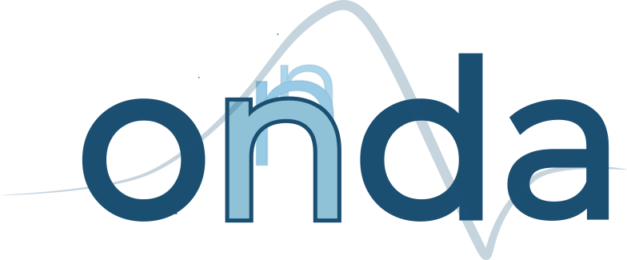

ONDA Lab

Open methodologies in Neurorehabilitation and Data Analysis
We are a research lab at IRCCS San Camillo, Venice, working on neurophysiology, neuropsychology and neuroscience for neurorehabilitation.
Our Lab philosophy The Lab philosophy is focused on rigour and Open Science principles. We are committed to sharing our code, methods, data, results but also teaching materials and educational resources to the scientific community, to promote transparency, reproducibility and collaboration in research.What we do
Clinical tools
We develop open tools for neuropsychological assessment and rehabilitation
Brain & MEEG
We study brain functions and biomarkers using MEEG
Open pipelines
We create open-source pipelines for neural data analysis
Analysis methods
We develop/optimize methods for behavioural and brain data analysis